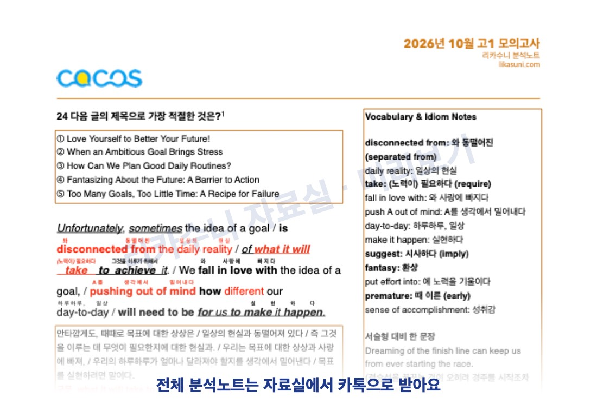

2026 고1 10모 영어 24번 문제 해설이에요. (2026년 10월 고1 전국연합학력평가 영어 · 제목 추론 · 정답 ④)
정답 근거, 오답 거르는 법, 구문(what it will take to do · lead A to do · seduce A to do), 어휘를 정리했고 분석노트 전자책·pdf 보는 곳은 글 아래에 있어요.
안녕하세요, 이매동 코코스학원 리카수니 원장입니다.
학생 요청으로 만든 분석노트를 바탕으로 정리했어요. 시험지를 옆에 펴 놓고 보시면 더 잘 보여요.
· 시험: 2026년 10월 고1 전국연합학력평가 영어
· 번호: 24번 (글의 제목)
· 정답: ④ Fantasizing About the Future: A Barrier to Action (미래에 대한 환상: 행동의 장벽)
목표를 이룬 미래를 달콤하게 상상하기만 하면 오히려 노력이 줄어든다는 글이에요.
긍정적 환상이 거짓되고 때 이른 성취감을 줘서, 지금 여기서 그 미래를 미리 즐기게 되고 행동할 필요를 느끼지 못하게 한다는 흐름이에요.
· 근거 1: 연구에 따르면 미래에 대한 긍정적 환상은 '거짓되고 때 이른 성취감'을 줘서 목표에 노력을 덜 들이게 해요.
· 근거 2: 환상 속에서 원하는 미래를 미리 즐기니 '행동해야 할 필요가 생기지 않는다'로 마무리해요.
→ 환상 = 행동의 장벽, '미래에 대한 환상: 행동의 장벽' ④가 정답이에요.
· ① 자신을 사랑하라 → 자기 사랑 이야기는 글에 없어요.
· ② 야심 찬 목표와 스트레스 → 스트레스가 아니라 '노력이 줄어든다'가 핵심이에요.
· ③ 좋은 일과 계획 → daily reality 라는 말이 나오지만 일과 계획법을 다루지 않아요.
· ⑤ 목표가 너무 많다 → 목표의 개수나 시간 부족 이야기는 없어요.
제목 문제는 연구 결과(research suggests)와 마지막 문장이 같은 말을 하는지 확인하세요.

1) what it will take to do (~하는 데 필요한 것)
→ the daily reality of what it will take to achieve it
2) push A out of mind (A가 길어 뒤로 간 형태)
→ pushing out of mind how different our day-to-day will need to be
3) lead A to do / provide A with B
→ can lead us to put less effort into our goals / provide us with a false and premature sense of accomplishment
4) 동명사 주어 + seduce A to do
→ fantasizing about a positive future "seduces a person to mentally enjoy ~"
5) integrate A into B
→ integrating a complex new behavior into our life
· disconnected from ~와 동떨어진
· daily reality 일상의 현실
· take (노력이) 필요하다
· fall in love with ~와 사랑에 빠지다
· make it happen 실현하다
· fantasy 환상 / fantasize 환상을 품다
· put effort into ~에 노력을 기울이다
· premature 때 이른
· sense of accomplishment 성취감
· romanticize 낭만화하다
· gloss over 얼버무리고 넘어가다
· intricacy 복잡함
· seduce 현혹시키다
· reflect on ~을 돌아보다
· induce 유발하다
· barrier 장벽
· ambitious 야심 찬
분석노트에 '서술형 대비 한 문장'(Dreaming of the finish line can keep us from ever starting the race. 결승선을 꿈꾸는 것이 오히려 경주를 시작조차 못 하게 할 수 있다)과 영어 핵심 요약(Core Summary, keep A from -ing)을 해석과 함께 정리해 두었어요.
자료실에서 이 문항 분석노트를 전자책으로 바로 볼 수 있어요. (끊어 읽기·해석·구문·어휘 2쪽)
인쇄용 pdf 는 카카오 로그인 후 카톡으로 받을 수 있고, 같은 회차 다른 번호도 요청할 수 있어요.
▶ 2026 고1 10모 영어 24번 해설·전자책
https://data.likasuni.com/moe/go1/2026-10/eng/24/
▶ 2026 고1 10모 영어 분석노트·변형문제·단어 pdf
https://data.likasuni.com/moe/go1/2026-10/eng/
영어 문제지·정답표와 듣기, 국어·수학·탐구 시험지와 등급컷도 회차 페이지에 모아 두었어요.
▶ 2026년 10월 고1 모의고사 전과목 문제·정답 pdf
https://data.likasuni.com/moe/go1/2026-10/
분당 이매동 코코스학원은 초등·중등·고등 영어와 수학을 가르쳐요.
모의고사·수능특강·내신 대비가 궁금하시면 편하게 문의해 주세요.
· 홈페이지: https://www.cocosedu.co.kr/
· 주소: 경기 성남시 분당구 판교로 476 2층